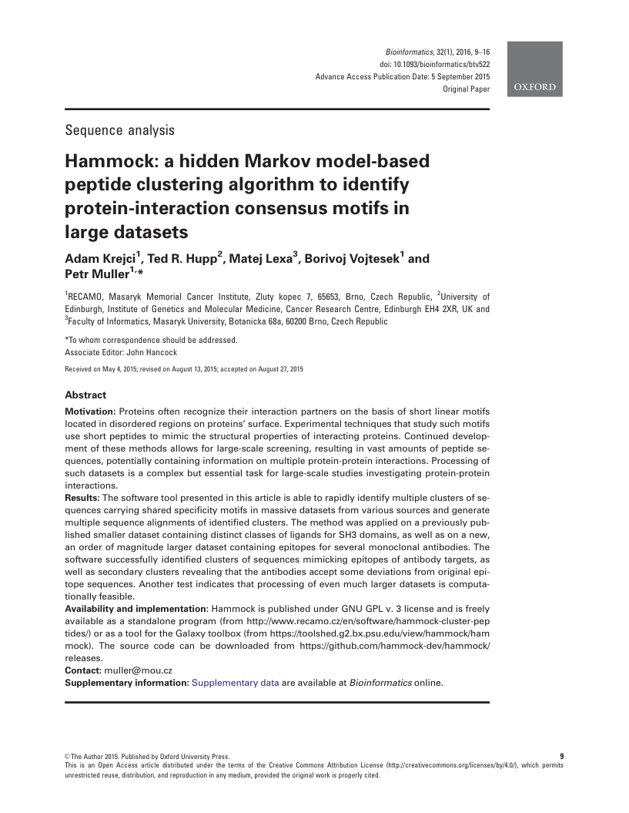
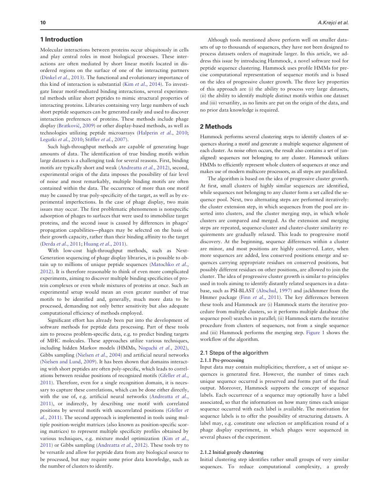
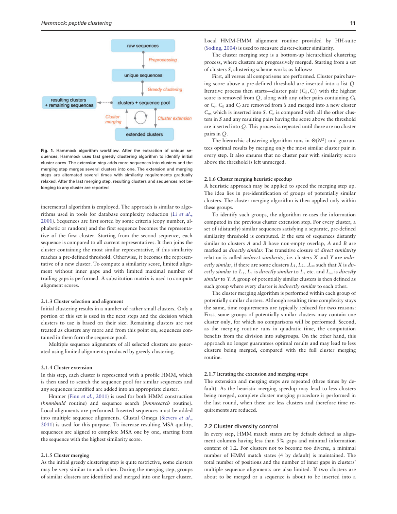
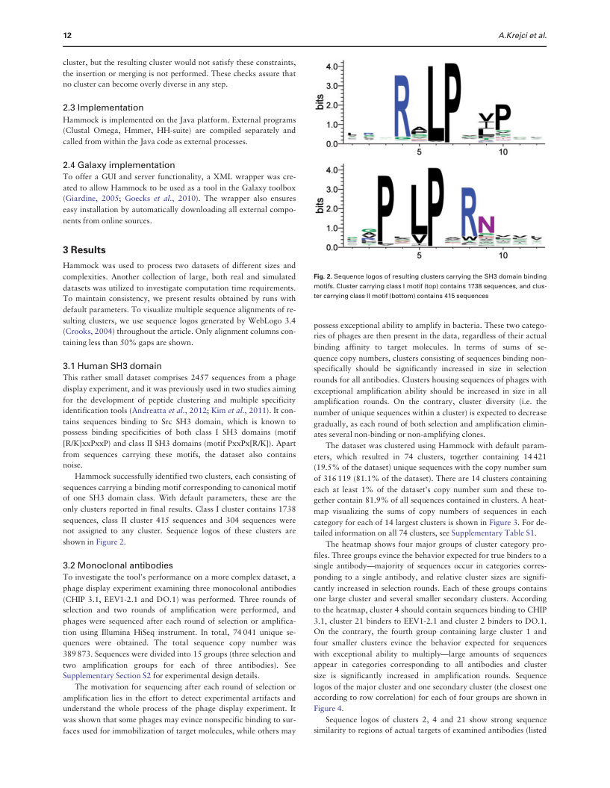
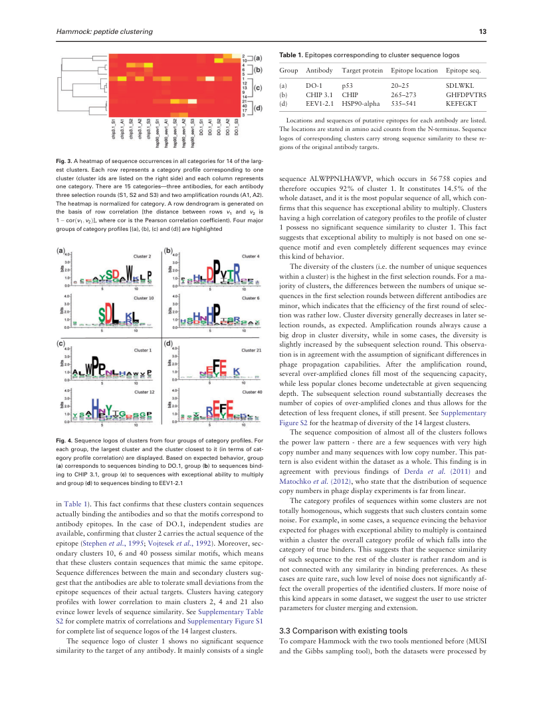
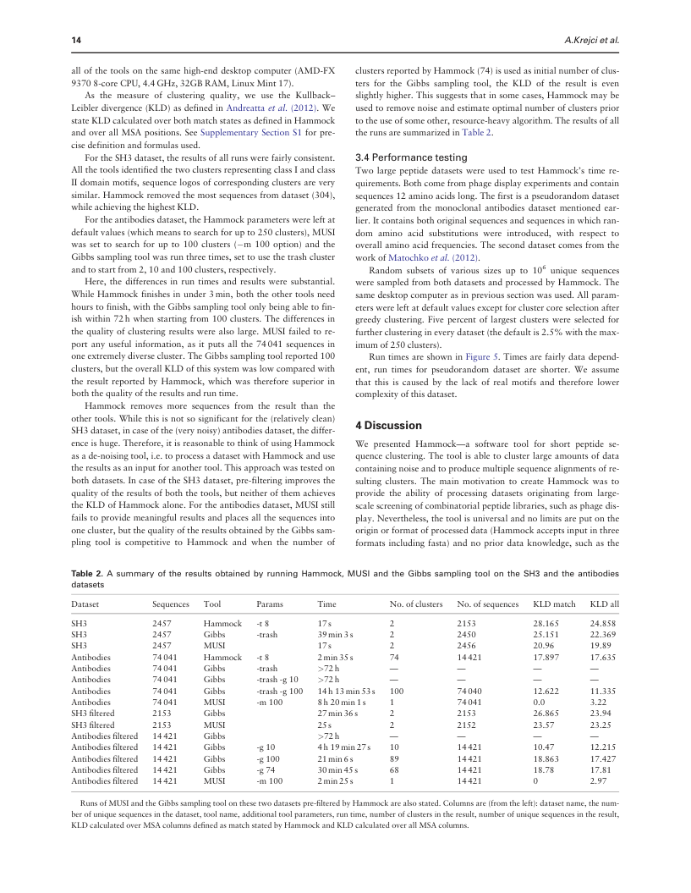
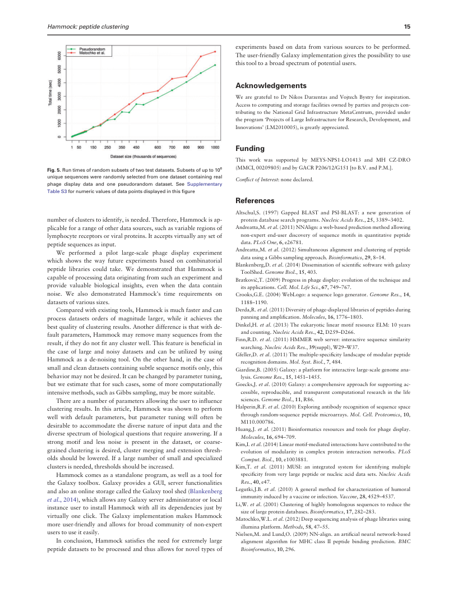

Adaptive Research Modeling · 2026

Bioinformatics,32(1),2016,9–16 doi:10.1093/bioinformatics/btv522 AdvanceAccessPublicationDate:5September2015 OriginalPaper
Sequence analysis
Hammock: a hidden Markov model-based
peptide clustering algorithm to identify
protein-interaction consensus motifs in
large datasets
AdamKrejci1, Ted R.Hupp2,MatejLexa3, BorivojVojtesek1 and PetrMuller1,*
1RECAMO, Masaryk Memorial Cancer Institute, Zluty kopec 7, 65653, Brno, Czech Republic, 2University of Edinburgh, Institute of Genetics and Molecular Medicine, Cancer Research Centre, Edinburgh EH4 2XR, UK and 3FacultyofInformatics,MasarykUniversity,Botanicka68a,60200Brno,CzechRepublic *Towhomcorrespondenceshouldbeaddressed. AssociateEditor:JohnHancock ReceivedonMay4,2015;revisedonAugust13,2015;acceptedonAugust27,2015
Motivation: Proteins often recognize their interaction partners on the basis of short linear motifs locatedindisorderedregionsonproteins’surface.Experimentaltechniquesthatstudysuchmotifs use short peptides to mimic the structural properties of interacting proteins. Continued develop- ment of these methods allows for large-scale screening, resulting in vast amounts of peptide se- quences,potentiallycontaininginformationonmultipleprotein-proteininteractions.Processingof such datasets is a complex but essential task for large-scale studies investigating protein-protein interactions. Results:Thesoftwaretoolpresentedinthisarticleisabletorapidlyidentifymultipleclustersofse- quencescarryingsharedspecificitymotifsinmassivedatasetsfromvarioussourcesandgenerate multiplesequencealignmentsofidentifiedclusters.Themethodwasappliedonapreviouslypub- lishedsmallerdatasetcontainingdistinctclassesofligandsforSH3domains,aswellasonanew, an order of magnitude larger dataset containing epitopes for several monoclonal antibodies. The software successfully identified clusters of sequences mimicking epitopes of antibody targets, as wellassecondaryclustersrevealingthattheantibodiesacceptsomedeviationsfromoriginalepi- tope sequences. Another test indicates that processing of even much larger datasets is computa- tionallyfeasible. Availabilityandimplementation:HammockispublishedunderGNUGPLv.3licenseandisfreely available as a standalone program (from http://www.recamo.cz/en/software/hammock-cluster-pep tides/)orasatoolfortheGalaxytoolbox(fromhttps://toolshed.g2.bx.psu.edu/view/hammock/ham mock). The source code can be downloaded from https://github.com/hammock-dev/hammock/ releases. Contact:muller@mou.cz Supplementaryinformation:SupplementarydataareavailableatBioinformaticsonline.
VCTheAuthor2015.PublishedbyOxfordUniversityPress. 9 ThisisanOpen Access article distributedundertheterms oftheCreativeCommons Attribution License (http://creativecommons.org/licenses/by/4.0/), which permits unrestrictedreuse,distribution,andreproductioninanymedium,providedtheoriginalworkisproperlycited.

10 A.Krejcietal.
1Introduction Althoughtoolsmentionedaboveperformwellonsmallerdata- setsofuptothousandsofsequences,theyhavenotbeendesignedto Molecularinteractionsbetweenproteinsoccurubiquitouslyincells processdatasetsorders of magnitude larger.In this article, wead- and play central roles in most biological processes. These inter- dressthisissuebyintroducingHammock,anovelsoftwaretoolfor actions are often mediated by short linear motifs located in dis- peptidesequenceclustering.HammockusesprofileHMMsforpre- ordered regions on the surface of one of the interacting partners cise computational representation of sequence motifs and is based (Dinkeletal.,2013).Thefunctionalandevolutionaryimportanceof ontheideaofprogressiveclustergrowth.Thethreekeyproperties thiskindofinteractionissubstantial(Kimetal.,2014).Toinvesti- of this approach are (i) the ability to process very large datasets, gatelinearmotif-mediatedbindinginteractions,severalexperimen- (ii)theabilitytoidentifymultipledistinctmotifswithinonedataset talmethodsutilizeshortpeptidestomimicstructuralpropertiesof and(iii)versatility,asnolimitsareputontheoriginofthedata,and interactingproteins.Librariescontainingverylargenumbersofsuch nopriordataknowledgeisrequired. shortpeptidesequencescanbegeneratedeasilyandusedtodiscover interaction preferences of proteins. These methods include phage display(Bratkovicˇ,2009)orotherdisplay-basedmethods,aswellas 2Methods technologies utilizing peptide microarrays (Halperin et al., 2010; Hammockperformsseveralclusteringstepstoidentifyclustersofse- Legutkietal.,2010;Stiffleretal.,2007). quencessharingamotifandgenerateamultiplesequencealignmentof Such high-throughput methods are capable of generating huge eachcluster.Asnoiseoftenoccurs,theresultalsocontainsasetof(un- amounts of data. The identification of true binding motifs within aligned) sequences not belonging to any cluster. Hammock utilizes largedatasetsisachallengingtaskforseveralreasons.First,binding HMMstoefficientlyrepresentwholeclustersofsequencesatonceand motifsaretypicallyshortandweak(Andreattaetal.,2012),second, makesuseofmodernmulticoreprocessors,asallstepsareparallelized. experimentaloriginofthedataimposesthepossibilityoffairlevel Thealgorithmisbasedontheideaofprogressiveclustergrowth. of noise and most remarkably, multiple binding motifs are often At first, small clusters of highly similar sequences are identified, containedwithinthedata.Theoccurrenceofmorethanonemotif whilesequencesnotbelongingtoanyclusterformasetcalledthese- maybecausedbytruepoly-specificityofthetarget,aswellasbyex- quencepool.Next,twoalternatingstepsareperformediteratively: perimental imperfections. In the case of phage display, two main theclusterextensionstep,inwhichsequencesfromthepoolarein- issuesmayoccur.Thefirstproblematicphenomenonisnonspecific serted into clusters, and the cluster merging step, in which whole adsorptionofphagestosurfacesthatwereusedtoimmobilizetarget clusters are compared and merged. As the extension and merging proteins, and the second issue is caused by differences in phages’ stepsarerepeated,sequence-clusterandcluster-clustersimilarityre- propagation capabilities—phages may be selected on the basis of quirements are gradually relaxed. This leads to progressive motif theirgrowthcapacity,ratherthantheirbindingaffinitytothetarget discovery. At the beginning, sequence differences within a cluster (Derdaetal.,2011;Huangetal.,2011). are minor, and most positions are highly conserved. Later, when With low-cost high-throughput methods, such as Next- moresequencesareadded,lessconservedpositionsemergeandse- Generationsequencingofphagedisplaylibraries,itispossibletoob- quences carrying appropriate residues on conserved positions, but tain up to millions of unique peptide sequences (Matochko et al., possiblydifferentresiduesonotherpositions,areallowedtojointhe 2012).Itisthereforereasonabletothinkofevenmorecomplicated experiments,aimingtodiscovermultiplebindingspecificitiesofpro- cluster.Theideaofprogressiveclustergrowthissimilartoprinciples teincomplexesorevenwholemixturesofproteinsatonce.Suchan usedintoolsaimingtoidentifydistantlyrelatedsequencesinadata- experimental setup would mean an even greater number of true base,suchasPSI-BLAST(Altschul,1997)andjackhmmerfromthe motifs to be identified and, generally, much more data to be Hmmer package (Finn et al., 2011). The key differences between processed,demandingnotonlybettersensitivitybutalsoadequate thesetoolsandHammockare(i)Hammockstartstheiterativepro- computationalefficiencyofmethodsemployed. cedurefrommultipleclusters,soitperformsmultipledatabase(the Significantefforthas alreadybeenput intothe development of sequencepool)searchesinparallel;(ii)Hammockstartstheiterative software methods for peptide data processing. Part of these tools procedure from clusters of sequences, not from a single sequence aimtoprocessproblem-specificdata,e.g.topredictbindingtargets and(iii)Hammockperformsthemergingstep.Figure1showsthe of MHC molecules. These approaches utilize various techniques, workflowofthealgorithm. including hidden Markov models (HMMs, Noguchi et al., 2002), 2.1Stepsofthealgorithm Gibbssampling(Nielsenetal.,2004)andartificialneuralnetworks (NielsenandLund,2009).Ithasbeenshownthatdomainsinteract- 2.1.1Pre-processing ingwithshortpeptidesareoftenpoly-specific,whichleadstocorrel- Inputdatamaycontainmultiplicities;therefore,asetofuniquese- ationsbetweenresiduepositionsofrecognizedmotifs(Gfelleretal., quences is generated first. However, the number of times each 2011).Therefore,evenforasinglerecognitiondomain,itisneces- unique sequence occurred is preserved and forms part of the final sarytocapturethesecorrelations,whichcanbedoneeitherdirectly, output. Moreover, Hammock supports the concept of sequence with the use of, e.g. artificial neural networks (Andreatta et al., labels. Eachoccurrence of a sequencemay optionally havea label 2011), or indirectly, by describing one motif with correlated associated,sothattheinformationonhowmanytimeseachunique positions by several motifs with uncorrelated positions (Gfeller et sequenceoccurredwitheachlabelisavailable.Themotivationfor al.,2011).Thesecondapproachisimplementedintoolsusingmul- sequencelabelsistoofferthepossibilityofstructuringdatasets.A tipleposition-weightmatrices(alsoknownasposition-specificscor- labelmay,e.g.constituteoneselectionoramplificationroundofa ing matrices) to represent multiple specificity profiles obtained by phage display experiment, in which phages were sequenced in various techniques, e.g. mixture model optimization (Kim et al., severalphasesoftheexperiment. 2011)orGibbssampling(Andreattaetal.,2012).Thesetoolstryto beversatileandallowforpeptidedatafromanybiologicalsourceto 2.1.2Initialgreedyclustering beprocessed,butmayrequiresomepriordataknowledge,suchas Initial clustering step identifies rather small groups of very similar thenumberofclusterstoidentify. sequences. To reduce computational complexity, a greedy

Hammock:peptideclustering 11
Local HMM-HMM alignment routine provided by HH-suite (Soding,2004)isusedtomeasurecluster-clustersimilarity. The cluster merging step is a bottom-up hierarchical clustering process,whereclustersareprogressivelymerged.Startingfromaset ofclustersS,clusteringschemeworksasfollows: First,allversusallcomparisonsareperformed.Clusterpairshav- ing score above a pre-defined threshold are inserted into a list Q. Iterative process then starts—cluster pair ðC ;CÞ with the highest k l scoreisremovedfromQ,alongwithanyotherpairscontainingC k orC.C andC areremovedfromSandmergedintoanewcluster l k l C ,whichisinsertedintoS.C iscomparedwithalltheotherclus- n n tersinSandanyresultingpairshavingthescoreabovethethreshold areinsertedintoQ.Thisprocessisrepeateduntiltherearenocluster pairsinQ. ThehierarchicclusteringalgorithmrunsinHðN2Þandguaran- teesoptimalresultsbymergingonlythemostsimilarclusterpairin Fig. 1. Hammock algorithm workflow. After the extraction of unique se- quences,Hammockusesfastgreedyclusteringalgorithmtoidentifyinitial everystep.Italsoensuresthatnoclusterpairwithsimilarityscore clustercores.Theextensionstepaddsmoresequencesintoclustersandthe abovethethresholdisleftunmerged. mergingstepmergesseveralclustersintoone.Theextensionandmerging steps are alternated several times with similarity requirements gradually 2.1.6Clustermergingheuristicspeedup relaxed.Afterthelastmergingstep,resultingclustersandsequencesnotbe- longingtoanyclusterarereported Aheuristicapproachmaybeappliedtospeedthemergingstepup. The idea lies in pre-identification of groups of potentially similar clusters.Theclustermergingalgorithmisthenappliedonlywithin incrementalalgorithmisemployed.Theapproachissimilartoalgo- thesegroups. rithms used in tools for database complexity reduction (Li et al., To identify such groups, the algorithm re-uses the information 2001).Sequencesarefirstsortedbysomecriteria(copynumber,al- computedinthepreviousclusterextensionstep.Foreverycluster,a phabeticorrandom)andthefirstsequencebecomestherepresenta- setof(distantly)similarsequencessatisfyingaseparate,pre-defined tive of the first cluster. Starting from the second sequence, each similarity threshold is computed. If the sets of sequences distantly sequenceiscomparedtoallcurrentrepresentatives.Itthenjoinsthe similar to clusters A and B have non-empty overlap, A and B are clustercontainingthe mostsimilar representative, if this similarity markedasdirectlysimilar.Thetransitiveclosureofdirectsimilarity reachesapre-definedthreshold.Otherwise,itbecomestherepresen- relationiscalledindirectsimilarity,i.e.clustersXandYareindir- tativeofanewcluster.Tocomputeasimilarityscore,limitedalign- ectlysimilar,iftherearesomeclustersL ;L :::L suchthatXisdir- 1 2 m ment without inner gaps and with limited maximal number of ectlysimilartoL ,L isdirectlysimilartoL etc.andL isdirectly 1 1 2 m trailinggapsisperformed.Asubstitutionmatrixisusedtocompute similartoY.Agroupofpotentiallysimilarclustersisthendefinedas alignmentscores. suchgroupwhereeveryclusterisindirectlysimilartoeachother. Theclustermergingalgorithmisperformedwithineachgroupof 2.1.3Clusterselectionandalignment potentiallysimilarclusters.Althoughresultingtimecomplexitystays Initialclusteringresultsinanumberofrathersmallclusters.Onlya thesame,timerequirementsaretypicallyreducedfortworeasons: portionofthissetisusedinthenextstepsandthedecisionwhich First, some groups of potentially similar clusters may contain one clusters to use is based on their size. Remaining clusters are not clusteronly,forwhichnocomparisonswillbeperformed.Second, treatedasclustersanymoreandfromthispointon,sequencescon- as the merging routine runs in quadratic time, the computation tainedinthemformthesequencepool. benefitsfromthe divisionintosubgroups. Onthe otherhand,this Multiple sequence alignments of all selected clusters are gener- approachnolongerguaranteesoptimalresultsandmayleadtoless atedusinglimitedalignmentsproducedbygreedyclustering. clusters being merged, compared with the full cluster merging routine. 2.1.4Clusterextension Inthisstep,eachclusterisrepresentedwithaprofileHMM,which 2.1.7Iteratingtheextensionandmergingsteps isthenusedtosearchthesequencepoolforsimilarsequencesand The extension and merging steps are repeated (three times by de- anysequencesidentifiedareaddedintoanappropriatecluster. fault). As the heuristic merging speedup may lead to less clusters Hmmer(Finnetal.,2011)isusedforbothHMMconstruction beingmerged,completeclustermergingprocedureis performedin (hmmbuild routine) and sequence search (hmmsearch routine). the last round, when there are less clusters and therefore time re- Localalignmentsareperformed.Insertedsequencesmustbeadded quirementsarereduced. into multiple sequence alignments. Clustal Omega (Sievers et al., 2011) is usedforthispurpose.To increaseresultingMSAquality, 2.2Clusterdiversitycontrol sequences are aligned to completeMSA one by one, startingfrom In every step, HMM match states are by default defined as align- thesequencewiththehighestsimilarityscore. mentcolumnshavingless than5% gaps andminimal information content of 1.2. For clusters not to become too diverse, a minimal 2.1.5Clustermerging number of HMM match states (4 by default) is maintained. The Astheinitialgreedyclusteringstepisquiterestrictive,someclusters totalnumberofpositionsandthenumberofinnergapsinclusters’ maybeverysimilartoeachother.Duringthemergingstep,groups multiple sequence alignments are also limited. If two clusters are ofsimilarclustersareidentifiedandmergedintoonelargercluster. about to be merged or a sequence is about to be inserted into a

12 A.Krejcietal.
cluster,buttheresultingclusterwouldnotsatisfytheseconstraints, theinsertionormergingisnotperformed.Thesechecksassurethat noclustercanbecomeoverlydiverseinanystep. 2.3Implementation HammockisimplementedontheJavaplatform.Externalprograms (Clustal Omega, Hmmer, HH-suite) are compiled separately and calledfromwithintheJavacodeasexternalprocesses. 2.4Galaxyimplementation ToofferaGUIandserverfunctionality,aXMLwrapperwascre- atedtoallowHammocktobeusedasatoolintheGalaxytoolbox (Giardine, 2005; Goecks et al., 2010). The wrapper also ensures easyinstallationbyautomaticallydownloadingallexternalcompo- nentsfromonlinesources.
3Results Hammock was used to process two datasets of different sizes and complexities. Another collection of large, both real and simulated Fig.2.SequencelogosofresultingclusterscarryingtheSH3domainbinding datasetswasutilizedtoinvestigatecomputationtimerequirements. motifs.ClustercarryingclassImotif(top)contains1738sequences,andclus- Tomaintain consistency,wepresentresultsobtained byrunswith tercarryingclassIImotif(bottom)contains415sequences defaultparameters.Tovisualizemultiplesequencealignmentsofre- sultingclusters,weusesequencelogosgenerated byWebLogo3.4 possessexceptionalabilitytoamplifyinbacteria.Thesetwocatego- (Crooks,2004)throughoutthearticle.Onlyalignmentcolumnscon- riesofphagesarethenpresentinthedata,regardlessoftheiractual taininglessthan50%gapsareshown. binding affinity to target molecules. In terms of sums of se- quencecopynumbers,clustersconsistingofsequencesbindingnon- 3.1HumanSH3domain specifically should be significantly increased in size in selection This rather small dataset comprises 2457 sequences from a phage roundsforallantibodies.Clustershousingsequencesofphageswith displayexperiment,anditwaspreviouslyusedintwostudiesaiming exceptional amplification ability should be increased in size in all for the development of peptide clustering and multiple specificity amplification rounds. On the contrary, cluster diversity (i.e. the identificationtools(Andreattaetal.,2012;Kimetal.,2011).Itcon- numberofuniquesequenceswithinacluster)isexpectedtodecrease tains sequences binding to Src SH3 domain, which is known to gradually,aseachroundofbothselectionandamplificationelimin- possess binding specificities of both class I SH3 domains (motif atesseveralnon-bindingornon-amplifyingclones. [R/K]xxPxxP)andclassIISH3domains(motifPxxPx[R/K]).Apart ThedatasetwasclusteredusingHammockwithdefaultparam- from sequences carrying these motifs, the dataset also contains eters, which resulted in 74 clusters, together containing 14421 noise. (19.5%ofthedataset)uniquesequenceswiththecopynumbersum Hammocksuccessfullyidentifiedtwoclusters,eachconsistingof of316119(81.1%ofthedataset).Thereare14clusterscontaining sequencescarryingabindingmotifcorrespondingtocanonicalmotif each at least 1% of the dataset’s copy number sum and these to- of one SH3 domain class. With default parameters, these are the gethercontain81.9%ofallsequencescontainedinclusters.Aheat- onlyclustersreportedinfinalresults.ClassIclustercontains1738 map visualizing the sums of copy numbers of sequences in each sequences, class II cluster 415 sequences and 304 sequences were categoryforeachof14largestclustersisshowninFigure3.Forde- not assigned to any cluster. Sequence logos of these clusters are tailedinformationonall74clusters,seeSupplementaryTableS1. showninFigure2. Theheatmapshowsfourmajorgroupsofclustercategorypro- files.Threegroupsevincethebehaviorexpectedfortruebinderstoa 3.2Monoclonalantibodies single antibody—majority of sequences occur in categories corres- Toinvestigatethetool’sperformanceonamorecomplexdataset,a ponding to a single antibody, and relative cluster sizes are signifi- phagedisplayexperimentexaminingthreemonocolonalantibodies cantlyincreasedinselectionrounds.Eachofthesegroupscontains (CHIP 3.1, EEV1-2.1 and DO.1) was performed. Three rounds of onelargeclusterandseveralsmallersecondaryclusters.According selection and two rounds of amplification were performed, and totheheatmap,cluster4shouldcontainsequencesbindingtoCHIP phages were sequenced after each round of selection or amplifica- 3.1,cluster21binderstoEEV1-2.1andcluster2binderstoDO.1. tion using Illumina HiSeq instrument. In total, 74041 unique se- On the contrary, the fourth group containing large cluster 1 and quences were obtained. The total sequence copy number was four smaller clusters evince the behavior expected for sequences 389873.Sequencesweredividedinto15groups(threeselectionand with exceptional ability to multiply—large amounts of sequences two amplification groups for each of three antibodies). See appear in categories corresponding to all antibodies and cluster SupplementarySectionS2forexperimentaldesigndetails. size is significantly increased in amplification rounds. Sequence Themotivationforsequencingaftereachroundofselectionor logosofthemajorclusterandonesecondarycluster(theclosestone amplification lies in the effort to detect experimental artifacts and accordingtorowcorrelation)foreachoffourgroupsareshownin understand the whole process of the phage display experiment. It Figure4. wasshownthatsomephagesmayevincenonspecificbindingtosur- Sequence logos of clusters 2, 4 and 21 show strong sequence facesusedforimmobilizationoftargetmolecules,whileothersmay similaritytoregionsofactualtargetsofexaminedantibodies(listed

Hammock:peptideclustering 13
Table1.Epitopescorrespondingtoclustersequencelogos Group Antibody Targetprotein Epitopelocation Epitopeseq. (a) DO-1 p53 20–25 SDLWKL (b) CHIP3.1 CHIP 265–273 GHFDPVTRS (d) EEV1-2.1 HSP90-alpha 535–541 KEFEGKT Locationsandsequencesofputativeepitopesforeachantibodyarelisted. ThelocationsarestatedinaminoacidcountsfromtheN-terminus.Sequence logosofcorrespondingclusterscarrystrongsequencesimilaritytothesere- gionsoftheoriginalantibodytargets. Fig.3.Aheatmapofsequenceoccurrencesinallcategoriesfor14ofthelarg- estclusters.Eachrowrepresentsacategoryprofilecorrespondingtoone cluster(clusteridsarelistedontherightside)andeachcolumnrepresents sequence ALWPPNLHAWVP, which occurs in 56758 copies and onecategory.Thereare15categories—threeantibodies,foreachantibody therefore occupies 92% of cluster 1. It constitutes 14.5% of the threeselectionrounds(S1,S2andS3)andtwoamplificationrounds(A1,A2). wholedataset,anditisthemostpopularsequenceofall,whichcon- Theheatmapisnormalizedforcategory.Arowdendrogramisgeneratedon firmsthatthissequencehasexceptionalabilitytomultiply.Clusters the basis of row correlation [the distance between rows v1 and v2 is havingahighcorrelationofcategoryprofilestotheprofileofcluster 1(cid:2)corðv1;v2Þ],wherecoristhePearsoncorrelationcoefficient).Fourmajor groupsofcategoryprofiles[(a),(b),(c)and(d)]arehighlighted 1 possess no significant sequence similarity to cluster 1. This fact suggeststhatexceptionalabilitytomultiplyisnotbasedononese- quence motif and even completely different sequences may evince thiskindofbehavior. Thediversityoftheclusters(i.e.thenumberofuniquesequences withinacluster)isthehighestinthefirstselectionrounds.Forama- jorityofclusters,thedifferencesbetweenthenumbersofuniquese- quencesinthefirstselectionroundsbetweendifferentantibodiesare minor,whichindicatesthattheefficiencyofthefirstroundofselec- tionwasratherlow.Clusterdiversitygenerallydecreasesinlaterse- lection rounds, as expected. Amplification rounds always cause a big drop in cluster diversity, while in some cases, the diversity is slightlyincreasedbythesubsequentselectionround.Thisobserva- tionisinagreementwiththeassumptionofsignificantdifferencesin phage propagation capabilities. After the amplification round, several over-amplified clones fill most of the sequencing capacity, whilelesspopularclonesbecomeundetectableatgivensequencing depth. The subsequent selection round substantially decreases the numberof copies of over-amplified clonesand thusallowsforthe detectionoflessfrequentclones,ifstillpresent.SeeSupplementary FigureS2fortheheatmapofdiversityofthe14largestclusters. The sequence composition of almost all of the clusters follows Fig.4.Sequencelogosofclustersfromfourgroupsofcategoryprofiles.For the power law pattern - there are a few sequences with very high eachgroup,thelargestclusterandtheclusterclosesttoit(intermsofcat- copynumberandmanysequenceswithlowcopynumber.Thispat- egoryprofilecorrelation)aredisplayed.Basedonexpectedbehavior,group ternisalsoevidentwithinthedatasetasawhole.Thisfindingisin (a)correspondstosequencesbindingtoDO.1,group(b)tosequencesbind- agreement with previous findings of Derda et al. (2011) and ingtoCHIP3.1,group(c)tosequenceswithexceptionalabilitytomultiply andgroup(d)tosequencesbindingtoEEV1-2.1 Matochkoetal.(2012),whostatethatthedistributionofsequence copynumbersinphagedisplayexperimentsisfarfromlinear. Thecategoryprofilesofsequenceswithinsomeclustersarenot inTable1).Thisfactconfirmsthattheseclusterscontainsequences totallyhomogenous,whichsuggeststhatsuchclusterscontainsome actuallybindingtheantibodiesandsothatthemotifscorrespondto noise.Forexample,insomecases,asequenceevincingthebehavior antibody epitopes. In the case of DO.1, independent studies are expectedforphageswithexceptionalabilitytomultiplyiscontained available,confirmingthatcluster2carriestheactualsequenceofthe withinaclustertheoverallcategoryprofileof whichfallsintothe epitope(Stephenetal.,1995;Vojteseketal.,1992).Moreover,sec- categoryoftruebinders.Thissuggeststhatthesequencesimilarity ondary clusters 10, 6 and 40 possess similar motifs, which means of suchsequenceto the restof the clusteris ratherrandomandis that theseclusters contain sequencesthat mimic the same epitope. not connected with any similarity in binding preferences. As these Sequencedifferencesbetweenthemainandsecondaryclusterssug- casesarequiterare,suchlowlevelofnoisedoesnotsignificantlyaf- gestthattheantibodiesareabletotoleratesmalldeviationsfromthe fecttheoverallpropertiesoftheidentifiedclusters.Ifmorenoiseof epitope sequences of their actual targets. Clusters having category thiskindappearsinsomedataset,wesuggesttheusertousestricter profiles with lower correlation to main clusters 2, 4 and 21 also parametersforclustermergingandextension. evincelowerlevelsofsequencesimilarity.SeeSupplementaryTable S2forcompletematrixofcorrelationsandSupplementaryFigureS1 forcompletelistofsequencelogosofthe14largestclusters. 3.3Comparisonwithexistingtools The sequence logo of cluster 1 shows no significant sequence TocompareHammockwiththetwotoolsmentionedbefore(MUSI similaritytothetargetofanyantibody.Itmainlyconsistsofasingle andtheGibbssamplingtool),boththedatasetswereprocessedby

14 A.Krejcietal.
allofthetoolsonthesamehigh-enddesktopcomputer(AMD-FX clustersreportedbyHammock(74)isusedasinitialnumberofclus- 93708-coreCPU,4.4GHz,32GBRAM,LinuxMint17). ters for the Gibbs sampling tool, the KLD of the result is even As the measure of clustering quality, we use the Kullback– slightlyhigher.Thissuggeststhatinsomecases,Hammockmaybe Leiblerdivergence(KLD)asdefinedinAndreattaetal.(2012).We usedtoremovenoiseandestimateoptimalnumberofclustersprior stateKLDcalculatedoverbothmatchstatesasdefinedinHammock totheuseofsomeother,resource-heavyalgorithm.Theresultsofall andoverallMSApositions.SeeSupplementarySectionS1forpre- therunsaresummarizedinTable2. cisedefinitionandformulasused. FortheSH3dataset,theresultsofallrunswerefairlyconsistent. 3.4Performancetesting AllthetoolsidentifiedthetwoclustersrepresentingclassIandclass Two large peptide datasets were used to test Hammock’s time re- IIdomainmotifs,sequencelogosofcorrespondingclustersarevery quirements.Bothcomefromphagedisplayexperimentsandcontain similar.Hammockremovedthemostsequencesfromdataset(304), sequences12aminoacidslong.Thefirstisapseudorandomdataset whileachievingthehighestKLD. generated from the monoclonal antibodies dataset mentioned ear- Fortheantibodiesdataset,theHammockparameterswereleftat lier.Itcontainsbothoriginalsequencesandsequencesinwhichran- defaultvalues(whichmeanstosearchforupto250clusters),MUSI dom amino acid substitutions were introduced, with respect to was set to search for up to 100 clusters ((cid:2)m 100 option) and the overallaminoacidfrequencies.Theseconddatasetcomesfromthe Gibbssamplingtoolwasrunthreetimes,settousethetrashcluster workofMatochkoetal.(2012). andtostartfrom2,10and100clusters,respectively. Random subsets of various sizes up to 106 unique sequences Here, the differences in run times and results were substantial. weresampledfrombothdatasetsandprocessedbyHammock.The WhileHammockfinishesinunder3min,boththeothertoolsneed samedesktopcomputerasinprevioussectionwasused.Allparam- hourstofinish,withtheGibbssamplingtoolonlybeingabletofin- eterswereleftatdefaultvaluesexceptforclustercoreselectionafter ishwithin72hwhenstartingfrom100clusters.Thedifferencesin greedy clustering.Five percent of largest clusters were selected for thequalityofclusteringresultswerealsolarge.MUSIfailedtore- furtherclusteringineverydataset(thedefaultis2.5%withthemax- port any useful information, as it puts all the 74041 sequences in imumof250clusters). oneextremelydiversecluster.TheGibbssamplingtoolreported100 RuntimesareshowninFigure5.Timesarefairlydatadepend- clusters,buttheoverallKLDofthissystemwaslowcomparedwith ent, run times for pseudorandom dataset are shorter. We assume the result reported by Hammock, which was therefore superior in that this is caused by the lack of real motifs and therefore lower boththequalityoftheresultsandruntime. complexityofthisdataset. Hammock removes more sequences from the result than the othertools.Whilethisisnotsosignificantforthe(relativelyclean) 4Discussion SH3dataset,incaseofthe(verynoisy)antibodiesdataset,thediffer- enceishuge.Therefore,itisreasonabletothinkofusingHammock We presented Hammock—a software tool for short peptide se- asade-noisingtool,i.e.toprocessadatasetwithHammockanduse quenceclustering.Thetoolisabletoclusterlargeamountsofdata theresultsasaninputforanothertool.Thisapproachwastestedon containingnoiseandtoproducemultiplesequencealignmentsofre- bothdatasets.IncaseoftheSH3dataset,pre-filteringimprovesthe sulting clusters. The main motivation to create Hammock was to qualityoftheresultsofboththetools,butneitherofthemachieves provide the ability of processing datasets originating from large- theKLDofHammockalone.Fortheantibodiesdataset,MUSIstill scalescreeningofcombinatorialpeptidelibraries,suchasphagedis- failstoprovidemeaningfulresultsandplacesallthesequencesinto play.Nevertheless,thetoolisuniversalandnolimitsareputonthe onecluster,butthequalityoftheresultsobtainedbytheGibbssam- originorformatofprocesseddata(Hammockacceptsinputinthree pling tool is competitive to Hammock and when the number of formatsincludingfasta)andnopriordataknowledge, suchas the Table 2. A summary of the results obtained by running Hammock, MUSI and the Gibbs sampling tool on the SH3 and the antibodies datasets Dataset Sequences Tool Params Time No.ofclusters No.ofsequences KLDmatch KLDall SH3 2457 Hammock -t8 17s 2 2153 28.165 24.858 SH3 2457 Gibbs -trash 39min3s 2 2450 25.151 22.369 SH3 2457 MUSI 17s 2 2456 20.96 19.89 Antibodies 74041 Hammock -t8 2min35s 74 14421 17.897 17.635 Antibodies 74041 Gibbs -trash >72h — — — — Antibodies 74041 Gibbs -trash-g10 >72h — — — — Antibodies 74041 Gibbs -trash-g100 14h13min53s 100 74040 12.622 11.335 Antibodies 74041 MUSI -m100 8h20min1s 1 74041 0.0 3.22 SH3filtered 2153 Gibbs 27min36s 2 2153 26.865 23.94 SH3filtered 2153 MUSI 25s 2 2152 23.57 23.25 Antibodiesfiltered 14421 Gibbs >72h — — — — Antibodiesfiltered 14421 Gibbs -g10 4h19min27s 10 14421 10.47 12.215 Antibodiesfiltered 14421 Gibbs -g100 21min6s 89 14421 18.863 17.427 Antibodiesfiltered 14421 Gibbs -g74 30min45s 68 14421 18.78 17.81 Antibodiesfiltered 14421 MUSI -m100 2min25s 1 14421 0 2.97 RunsofMUSIandtheGibbssamplingtoolonthesetwodatasetspre-filteredbyHammockarealsostated.Columnsare(fromtheleft):datasetname,thenum- berofuniquesequencesinthedataset,toolname,additionaltoolparameters,runtime,numberofclustersintheresult,numberofuniquesequencesintheresult, KLDcalculatedoverMSAcolumnsdefinedasmatchstatedbyHammockandKLDcalculatedoverallMSAcolumns.

Hammock:peptideclustering 15
experiments based on data from various sources to be performed. Theuser-friendlyGalaxyimplementationgivesthepossibilitytouse thistooltoabroadspectrumofpotentialusers. Acknowledgements
WearegratefultoDrNikosDarzentasandVojtechBystryforinspiration. Accesstocomputingandstoragefacilitiesownedbypartiesandprojectscon- tributingtotheNationalGridInfrastructureMetaCentrum,providedunder theprogram‘ProjectsofLargeInfrastructureforResearch,Development,and Innovations’(LM2010005),isgreatlyappreciated. Funding This work was supported by MEYS-NPS1-LO1413 and MH CZ-DRO Fig.5.Runtimesofrandomsubsetsoftwotestdatasets.Subsetsofupto106 (MMCI,00209805)andbyGACRP206/12/G151[toB.V.andP.M.]. uniquesequenceswererandomlyselectedfromonedatasetcontainingreal ConflictofInterest:nonedeclared. phage display data and one pseudorandom dataset. See Supplementary TableS3fornumericvaluesofdatapointsdisplayedinthisfigure References Altschul,S. (1997) Gapped BLAST and PSI-BLAST: a new generation of numberofclusterstoidentify,isneeded.Therefore,Hammockisap- proteindatabasesearchprograms.NucleicAcidsRes.,25,3389–3402. plicableforarangeofotherdatasources,suchasvariableregionsof Andreatta,M.etal.(2011)NNAlign:aweb-basedpredictionmethodallowing lymphocytereceptorsorviralproteins.Itacceptsvirtuallyanysetof non-expertend-userdiscoveryofsequence motifsinquantitativepeptide peptidesequencesasinput. data.PLoSOne,6,e26781. Andreatta,M.etal.(2012)Simultaneousalignmentandclusteringofpeptide We performed a pilot large-scale phage display experiment datausingaGibbssamplingapproach.Bioinformatics,29,8–14. which shows the way future experiments based on combinatorial Blankenberg,D.etal.(2014)Disseminationofscientificsoftwarewithgalaxy peptide libraries could take. We demonstrated that Hammock is ToolShed.GenomeBiol.,15,403. capableofprocessingdataoriginatingfromsuchanexperimentand Bratkovicˇ,T.(2009)Progressinphagedisplay:evolutionofthetechniqueand provide valuable biological insights, even when the data contain itsapplications.Cell.Mol.LifeSci.,67,749–767. noise. We also demonstrated Hammock’s time requirements on Crooks,G.E.(2004)WebLogo:asequencelogogenerator.GenomeRes.,14, datasetsofvarioussizes. 1188–1190. Comparedwithexistingtools,Hammockismuchfasterandcan Derda,R.etal.(2011)Diversityofphage-displayedlibrariesofpeptidesduring process datasets orders of magnitude larger, while it achieves the panningandamplification.Molecules,16,1776–1803. bestqualityofclusteringresults.Anotherdifferenceisthatwithde- Dinkel,H.etal.(2013)TheeukaryoticlinearmotifresourceELM:10years andcounting.NucleicAcidsRes.,42,D259–D266. faultparameters,Hammockmayremovemanysequencesfromthe Finn,R.D.etal.(2011)HMMERwebserver:interactivesequencesimilarity result,iftheydonotfitanyclusterwell.Thisfeatureisbeneficialin searching.NucleicAcidsRes.,39(suppl),W29–W37. the case of large and noisy datasets and can be utilized by using Gfeller,D.etal.(2011)Themultiple-specificitylandscapeofmodularpeptide Hammock as a de-noising tool. On the other hand, in the case of recognitiondomains.Mol.Syst.Biol.,7,484. smallandcleandatasetscontainingsubtlesequencemotifsonly,this Giardine,B.(2005)Galaxy:aplatformforinteractivelarge-scalegenomeana- behaviormaynotbedesired.Itcanbechangedbyparametertuning, lysis.GenomeRes.,15,1451–1455. butweestimatethatforsuchcases,someofmorecomputationally Goecks,J.etal.(2010)Galaxy:acomprehensiveapproachforsupportingac- intensivemethods,suchasGibbssampling,maybemoresuitable. cessible,reproducible,andtransparentcomputationalresearchinthelife Thereareanumberofparametersallowingtheusertoinfluence sciences.GenomeBiol.,11,R86. clusteringresults.Inthisarticle,Hammockwasshowntoperform Halperin,R.F.etal.(2010)Exploringantibodyrecognitionofsequencespace throughrandom-sequencepeptidemicroarrays.Mol.Cell.Proteomics,10, well with default parameters, but parameter tuning will often be M110.000786. desirabletoaccommodatethediversenatureofinputdataandthe Huang,J.etal.(2011)Bioinformaticsresourcesandtoolsforphagedisplay. diversespectrumofbiologicalquestionsthatrequireanswering.Ifa Molecules,16,694–709. strong motif and less noise is present in the dataset, or coarse- Kim,I.etal.(2014)Linearmotif-mediatedinteractionshavecontributedtothe grainedclusteringisdesired,clustermergingandextensionthresh- evolution of modularity in complex protein interaction networks. PLoS oldsshouldbelowered.Ifalargenumberofsmallandspecialized Comput.Biol.,10,e1003881. clustersisneeded,thresholdsshouldbeincreased. Kim,T. et al. (2011) MUSI: an integrated system for identifying multiple Hammockcomesasastandaloneprogram,aswellasatoolfor specificityfromverylargepeptideornucleicaciddatasets.NucleicAcids the Galaxy toolbox. Galaxy provides a GUI, server functionalities Res.,40,e47. andalsoanonlinestoragecalledtheGalaxytoolshed(Blankenberg Legutki,J.B.etal.(2010)Ageneralmethodforcharacterizationofhumoral immunityinducedbyavaccineorinfection.Vaccine,28,4529–4537. etal.,2014),whichallowsanyGalaxyserveradministratororlocal Li,W.etal.(2001)Clusteringofhighlyhomologoussequencestoreducethe instanceusertoinstallHammock withallitsdependenciesjustby sizeoflargeproteindatabases.Bioinformatics,17,282–283. virtually one click. The Galaxy implementation makes Hammock Matochko,W.L.etal.(2012)Deepsequencinganalysisofphagelibrariesusing moreuser-friendlyandallowsforbroadcommunityof non-expert illuminaplatform.Methods,58,47–55. userstouseiteasily. Nielsen,M.andLund,O.(2009)NN-align.anartificialneuralnetwork-based In conclusion, Hammock satisfies the need for extremely large alignment algorithm for MHC class II peptide binding prediction. BMC peptidedatasetstobeprocessedandthusallowsfornoveltypesof Bioinformatics,10,296.
16 A.Krejcietal.
Nielsen,M.etal.(2004)ImprovedpredictionofMHCclassiandclassIIepi- Soding,J.(2004)ProteinhomologydetectionbyHMM-HMMcomparison. topesusinganovelGibbssamplingapproach.Bioinformatics,20,1388– Bioinformatics,21,951–960. 1397. Stephen,C.W.etal.(1995)Characterisationofepitopesonhumanp53using Noguchi,H.etal.(2002)HiddenMarkovmodel-basedpredictionofantigenic phage-displayed peptide libraries: insights into antibody-peptide inter- peptidesthatinteractwithMHCclassIImolecules.J.Biosci.Bioeng.,94, actions.J.Mol.Biol.,248,58–78. 264–270. Stiffler,M.A.etal.(2007)PDZdomainbindingselectivityisoptimizedacross Sievers,F. et al. (2011) Fast, scalable generation of high-quality protein themouseproteome.Science,317,364–369. multiple sequence alignments using clustal omega. Mol. Syst. Biol., 7, Vojtesek,B.etal.(1992)Animmunochemicalanalysisofthehumannuclear 539. phosphoproteinp53.J.Immunol.Methods,151,237–244.